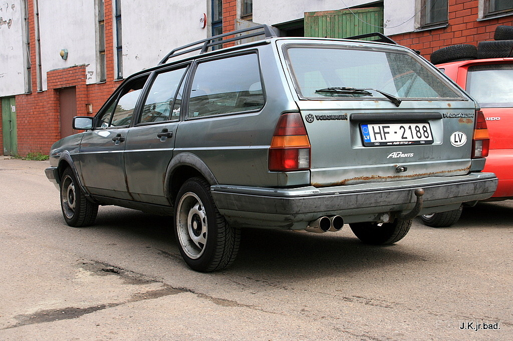

Sāpes krūškurvja apvidū, kas izstaro uz mugurkaulu
- Elpošanas orgānu saslimšanas
Zviedrijā, Gēteborgas centrā, ir plats bulvāris ar skaistiem kokiem abās pusēs. Kādu dienu es pamanīju caurumu vienā no milzīgo koku stumbriem, tādēļ es ziņkārīgi palūkojās iekšā un ieraudzīju, ka koks ir pilnīgi dobjš. Dobjš, bet ne tukšs! Tas bija piepildīts ar dažādiem atkritumiem. - Cūkmens - Par mani
Sirds ir dobjš muskuļu orgāns, kas atrodas krūšu kurvī, vairāk kreisajā pusē. Sirds ir būtiskāka asinsrites sistēmas daļa. Tā darbojās kā asiņu sūknis, kas liek asinīm virzīties pa visu organismu. Sirds forma atgādina sažņaugtu dūru. Pieaugušai sievietei tās svars ir 255 grami, bet vīrietim – 310 grami. - Sāpes krūškurvja apvidū, kas izstaro uz mugurkaulu
Fetish Fantasy dobjš Strap-on 20 cm par labu cenu 220.lv interneta veikalā. Ātra un ērta piegāde, izdevīgi apmaksas nosacījumi. - Atvieglojums jūsu dvēselēm
Siltumnīcai ir ērtas un plašas bīdāmās durvis un 2 jumta logi labākai ventilācijai. Mūsu siltumnīca tiek piegādāta bez pamatnes. Tā jānovieto uz gludas, kvalitatīvas virsmas, lai tā neizkustētos vai nedeformētos gruntsūdeņu vai pārāk liela sausuma dēļ. - vidaXL siltumnīca, alumīnija rāmis un dobjš panelis, 2 ...
Pirmajā brīdī šķita – tas ir pērkona grāviens. Bet nē. Tas bija gigantisks, dobjš un ilgs vepra kvieciens, kas iedārdējās kaut kur austrumu pamalē, pārvēlās pāri, aizsitot ausis un nogāžot mani eļļas lāmā, un vēl labu brīdi drebināja pakalnus vakaros. - Jaunumu raksts | Ārsts.lv
Vesela sirds ir dobjš, spēcīgs, muskuļots dūres lieluma orgāns. Tā ir kā pumpis, kurš nepārtraukti sūknē asinis caur abiem asinsrites lokiem. Sirds ir muskulis, kas sastāv no četrām kamerām, diviem priekškambariem un diviem kambariem. - Akrila vannas iekšpusē: kādas ir atšķirības formas un ...
Galvenais provocējošais faktors ir aukstums, īpaši auksti dzērieni. Saslimšanas – bronhīts, faringīts, haimorīts. Tartarus emeticus – ieteicams bērniem un vecākiem cilvēkiem ar hronisku bronhītu. Raksturīgs dziļš, dobjš klepus, kas var novest līdz pat vemšanai ar elpas trūkumu. Daudz krēpu, bet nav spēka tās atklepot. - Kad salūst pasaule • IR.lv
dobjš īp. Zems un ar atbalsi (par balsi, skaņu). Dobja balss. Dobji pērkona grāvieni. Dobji dunēt. Atvasinājumi: dobjums v. Jei žinote tikslesnę informaciją paaiškinančią 'dobjs' reikšmę, galite ją pakeisti: REDAGUOTI BETA. Įrašas: Paaiškinimas - Sāpīgas mēnešreizes. Kas un kāpēc sāp?
Šāds krūšu kurvja ievainojums bieži ietekmē 11. un 12. skriemeli. Traumas brīdī ir dzirdama kraukšķēšana vai plaisa. Sāpes rodas tūlīt pēc traumas, ir lokalizētas skartajā zonā un ir ļoti intensīvas. Novēroti arī šādi simptomi: sāpes uz palpācijas; sāpju palielināšanās ar jebkuru kustību; - Vita Melne – Par un ap uroloģiju
Cistocēle ir urīnpūšļa noslīdējums jeb priekšējais maksts prolapss, kad izmainās urīnpūšļa anatomiskais novietojums un izvelvē maksts priekšējo sienu. Urīnpūslis ir dobjš, muskuļots izvadorgāns.

Skip to content Lv-Nutritionatyourfingertips
Online shop — Detonic, Cardiline, Insumed, Dianol, Cardiol
Start » OrtopēdijaSāpes krūškurvja apvidū, kas izstaro uz mugurkaulu
Sāpīgas sajūtas mugurkaulā muguras vidū nav nekas neparasts. To cēlonis var būt triviāla pārmērīga izturēšanās, ievainojumi vai slimības. Ar sāpju patoloģiskiem cēloņiem ir nepieciešama kompetenta ārstēšana, kas ir atkarīga no diagnozes. Profilaktiski pasākumi palīdzēs izvairīties no nepatīkamām sajūtām.
Contents Iespējamie sāpju cēloņi, to raksturs un pavadošie simptomi Lūzums Skolioze Osteohondroze Starpskriemeļu disku izvirzījums Krūšu kaula kifoze Starpskriemeļu trūce Spondilartroze dobjš Myositis Pie kura ārsta man vajadzētu doties? Diagnostika Mugurkaula sāpju ārstēšana muguras vidū Pirmā palīdzība ievainojumu gadījumos Zāļu terapija Fizioterapija, masāža, vingrošanas terapija Ortopēdiskās ierīces ProfilakseIespējamie sāpju cēloņi, to raksturs un pavadošie simptomi
Muguras vidusdaļa jāuzskata par zonu no lāpstiņu vidus līdz zonai virs jostasvietas. Anatomiski šī mugurkaula daļa pieder krūšu kurvja reģionam, bet sāpes var izstarot uz šo vietu arī uz dzemdes kakla un jostas rajonu traumu un patoloģiju fona.
Lūzums
Šāds krūšu kurvja ievainojums bieži ietekmē 11. un 12. skriemeli. Traumas brīdī ir dzirdama kraukšķēšana vai plaisa.
Sāpes rodas tūlīt pēc traumas, ir lokalizētas skartajā zonā un ir ļoti intensīvas.
Novēroti arī šādi simptomi:
sāpes uz palpācijas; sāpju palielināšanās ar jebkuru kustību; muskuļu un skeleta funkciju nomākšana skartajā zonā; lokalizēta mīksto audu edēma; ekstremitāšu parestēzija, kas izteikta ar nejutīgumu, tirpšanu, jutīguma zudumu; slikta dūša, aizrīšanās, apgrūtināta rīšana; ar smalcinātu lūzumu, sāpēm krūšu kauls, vēderā; samaņas zudums ar sāpju šoku.Skolioze
Šī patoloģija ietver mugurkaula izliekumu gar frontālo plakni. Tas var būt iedzimts, iegūts vai posttraumatisks.
Skoliozi papildina sāpes, kas ar nelielām novirzēm periodiski rodas. Biežāk tas tiek lokalizēts plaušu rajonā skartajā pusē, ar kreisās puses bojājumu tas tiek piešķirts sirdij, un ar labo pusi tas rada diskomfortu sirds rajonā.
Patoloģiju var papildināt arī ar šādiem simptomiem:
plecu šķībs skartajā pusē tas kļūst zemāks; apakšējo piekrastes arku asimetrisks izvietojums; ķermeņa augšdaļas noliekšana uz skarto pusi; bieži attīstās starpribu neiralģija.
Osteohondroze
Šo patoloģiju papildina deģeneratīvas-distrofiskas izmaiņas.
Ar krūšu ķermeņa osteohondrozi sāpes tiek novērotas ne tikai muguras vidū, bet arī izstaro uz krūtīm, sirdi un citiem iekšējiem orgāniem. Pacienti bieži sūdzas par kolas sajūtu krūtīs.
Patoloģiju var papildināt arī ar šādiem simptomiem:
sāpošas sāpes; nejutīgums un sāpes ekstremitātēs; palielinātas sāpes ar pēkšņām kustībām, fiziskām slodzēm, svaru celšanu, vienlaikus klepojot un šķaudot; samazināts kustības diapazons; muskuļu spazmas; iespējams nervu sakņu bojājums, traucējot jutīgumu, izraisot šaušanas sāpes, hipotensiju, hipotrofiju. ! Ceļa locītavas subhondrālā skleroze ar tautas līdzekļiemStarpskriemeļu disku izvirzījums
Šī patoloģija bieži ir osteohondrozes komplikācija un ietver starpskriemeļu diska izliekšanos mugurkaula kanālā.
Kad tiek ietekmēts krūšu kurvja reģions, sāpes tiek lokalizētas muguras vidū. Tas tiek novērots arī krūtīs, ietekmē iekšējos orgānus sirdi un plaušas.
Patoloģiju papildina arī šādi simptomi:
nespēks; vispārējs vājums; muskuļu sasprindzinājums paaugstināts asinsspiediens un vienlaicīgi autonomie traucējumi: galvassāpes, reibonis, slikta dūša; iekšējo orgānu inervācijas pārkāpums var izraisīt elpas trūkumu, žults stagnāciju, atonisku aizcietējumu.Krūšu kaula kifoze
Šī patoloģija nozīmē mugurkaula izliekumu, bet atšķirībā no skoliozes sagitālajā plaknē. Tas var būt iedzimts vai iegūts.
Sāpes rodas ar krūšu kurvja kifozes progresēšanu. Tas ir lokalizēts muguras vidū, ietekmējot kaklu.
Patoloģiju papildina arī šādi simptomi:
stoop, iespējams, hunchback; muskuļu spazmas; nemainīgs muguras muskuļu tonuss; ķermeņa augšdaļas noliekšana uz priekšu; sašaurināšanās krūtīs; diafragmas izlaidums; vēdera priekšējās sienas muskuļu deformācija.
Starpskriemeļu trūce
Ar šo slimību cieš muskuļu un skeleta sistēma. To izsaka ar diska kodola pulposusa pārvietojumu un gredzenveida šķiedras plīsumu.
Sāpes krūšu rajonā var kļūt nemainīgas, ja persona ir spiesta atrasties vienā stāvoklī.
Patoloģiju var papildināt ar šādiem simptomiem:
skolioze vai kyphoscoliosis; palielinātas sāpes klepus, šķaudīšanas, fiziskās slodzes laikā; sāpju apstarošana apakšējās ekstremitātēs; ierobežota mobilitāte uz muskuļu spriedzes fona; vājums, nejutīgums un tirpšana apakšējās ekstremitātēs; potences traucējumi; urinācijas pārkāpums, defekācija.Spondilartroze
Šī slimība ir deģeneratīva un ietekmē hialīna skrimšļus un citas šķautņu locītavu sastāvdaļas. Patoloģija ilgu laiku var būt asimptomātiska. Kad tiek skartas nervu saknes, attīstās sāpju sindroms, kas ietekmē muguras vidusdaļu, krūšu kaula reģionu.
Sāpes var būt vienpusējas vai jostas roze. Tas pasliktinās ar saliekšanu, var pēkšņi pasliktināties uz dažām minūtēm.
Patoloģiju papildina arī šādi simptomi:
palielināts elpošanas ātrums, tā paviršība sāpju dēļ nopūtās; samazināta skartās vietas mobilitāte; diskomforts kuņģī, ja nav orgānu patoloģijas; muskuļu spazmas; nejutīgums un tirpšana skarto nervu sakņu zonā; progresējošā stadijā ir iespējama skolioze, kifoze.dobjš
Šī patoloģija ir izliekums sānu projekcijā un var būt iedzimta vai iegūta. Slimība var izraisīt stipras sāpes sakarā ar krūšu kurvja apjoma samazināšanos.
! Sāpju mazinātāji muguras un locītavu sāpēm, kas ir mazāk kaitīgiPatoloģiju raksturo arī šādi simptomi:
pārvietojot galvu uz priekšu; plakana krūtis uz redzamā vēdera fona; plecu pagarināšana uz priekšu; kāju locīšana ceļa locītavās; ierobežota mobilitāte; materiāla metabolisma pārkāpums; nogurums.Myositis
Ar šo patoloģiju muskuļu audi kļūst iekaisuši. Slimība bieži notiek uz lielas fiziskās slodzes, vājas imunitātes, vecuma dēļ.
Sāpes mugurkaulā muguras vidū ar krūšu kurvja reģiona miozītu pavada diskomforts krūtīs, tāpēc bieži tiek aizdomas par sirds un elpošanas orgānu patoloģijām.
Slimību var papildināt arī ar šādiem simptomiem:
klepus; elpas trūkums; atkārtotas galvassāpes; pietūkums, pietūkums; paaugstināta ķermeņa temperatūra; apgrūtināta rīšana.Pie kura ārsta man vajadzētu doties?
Sazinoties ar klīniku, jums jāsāk ar terapeitu, kurš noteiks, pie kura speciālista jums jākļūst konkrētā gadījumā. Krūšu kurvja mugurkaula patoloģijas parasti risina ķirurgs vai neirologs.
Jums var būt nepieciešama arī citu profesionāļu palīdzība:
reimatologs; ortopēds; vertebrologs; traumatologs; osteopāts endokrinologs; kardiologs; ftiologs; chiropractor; fizioterapeits.Diagnostika
Mugurkaula sāpju diagnostika muguras vidū sākas ar vispārēju pārbaudi un anamnēzi. Pēc tam speciālists izraksta nepieciešamos pētījumus. Sākotnējā stadijā diagnostika parasti tiek ierobežota ar rentgena stariem un vispārējām asins un urīna analīzēm.
Nākotnē var būt nepieciešami šādi pētījumi:
bioķīmiskais asins analīzes; ultraskaņas skenēšana; magnētiskās rezonanses attēlveidošana; datortomogrāfija; elektromiogrāfija; scintigrāfija; densitometrija; angiogrāfija; pneimomielogrāfija; diskogrāfija; radioizotopu skenēšana.Mugurkaula sāpju ārstēšana muguras vidū
Ja rodas problēmas ar mugurkaulu, viņi bieži vēršas pēc palīdzības pie osteopāta. Ārstēšana šajā gadījumā ietver skriemeļu normāla stāvokļa atjaunošanu.
Pirmā palīdzība ievainojumu gadījumos
Lūzuma gadījumā cietušais jānogādā slimnīcā uz stingra un līdzena nestuves. Ķermenim jābūt imobilizētam. Aizliegts lietot perorālos līdzekļus. Sāpes var mazināt ar anestēzijas zāles intramuskulāru injekciju.
Zāļu terapija
Narkotiku lietošanas iezīmes ir atkarīgas no cēloņa, kas izraisīja šādu simptomu. Ārsts var izrakstīt šādus medikamentus:
nesteroīdie pretiekaisuma līdzekļi; hondroprotektori; glikokortikosteroīdi; pretsāpju līdzekļi; spazmolītiķi; antibiotikas; vitamīni; imūnsupresanti.Narkotiku terapijai katrā gadījumā ir savas īpatnības, tāpēc speciālistam tā jānosaka. Tieši viņš nosaka nepieciešamo zāļu sarakstu, to uzņemšanas shēmu, devu un terapeitiskā kursa ilgumu.
Fizioterapija, masāža, vingrošanas terapija
Fizioterapeitiskās metodes ir efektīvas dažādām mugurkaula patoloģijām. Atkarībā no nepatīkamā simptoma cēloņa var noteikt šādas procedūras:
elektro- vai fonoforēze ar medikamentiem; UHF terapija; ultraskaņas terapija; magnetoterapija; darsonvalizācija; ozokerīta terapija; parafīna vannas; dubļu ārstēšana; krioterapija. ! Ceļa locītavas 3. pakāpes ārstēšanas jaunās artrozes ārstēšanas metodesLielākajai daļai patoloģiju ir norādīta masāža. Tas ļauj atjaunot asinsriti, aktivizēt vielmaiņas procesus un atjaunot mobilitāti.
Viņi izmanto arī fizioterapijas vingrinājumus, kas jāveic speciālista uzraudzībā. Pēc konsultēšanās ar ārstu ir atļauta vingrošana mājās. Tas ļauj atgūt mobilitāti, apturēt slimības progresēšanu, mazināt muskuļu sasprindzinājumu.
Mēs piedāvājam video ar vingrinājumu komplektu, kas palīdz novērst sāpes mugurkaulā muguras vidū:
Ortopēdiskās ierīces
Dažādu muskuļu un skeleta sistēmas patoloģiju gadījumā viņi izmanto ortopēdiskās ierīces pārsējus, korsetes, lences. Lūzuma gadījumā tiek izmantots korsete ar noteiktu stingrību un fiksācijas pakāpi.
Ortopēdiskās ierīces fiksē muguru pareizajā stāvoklī, pārdala slodzi un samazina spiedienu uz nervu saknēm.
Profilakse
Šie profilakses pasākumi palīdzēs izvairīties no mugurkaula sāpēm muguras vidū:
izvairīšanās no ievainojumiem, ievērojama fiziska pārslodze; pareiza stāja; augstpapēžu noraidīšana; normāla ķermeņa svara uzturēšana; pietiekamas fiziskās aktivitātes; pakāpeniska slodžu palielināšanās; regulāras medicīniskās pārbaudes; savlaicīga, pareiza un pilnīga jebkuras slimības ārstēšana; pareiza uztura, ieskaitot pietiekamu vitamīnu un minerālvielu uzņemšanu.Trauma vai slimība var izraisīt sāpes mugurkaulā muguras vidū. Tikai speciālists var noteikt precīzu diagnozi. Vairumā gadījumu ārstēšana ietver integrētu pieeju, ko pārstāv zāļu terapija, fizioterapija, masāža un vingrošanas terapija.
Top-5 Elkoņa locītavas epikondilīta ārstēšana ar tautas līdzekļiem ar ziedēm Mājas medicīnas ierīces locītavu slimību profilaksei Kaulu un locītavu slimību radiācijas diagnostika Burgener download Kādas ir krūšu kaula mugurkaula sāpju skoliozes briesmas Sāpes mugurkaula kakla daļā, nekā to, kā ārstēt mājās © 2020 https://nutritionatyourfingertips.com/